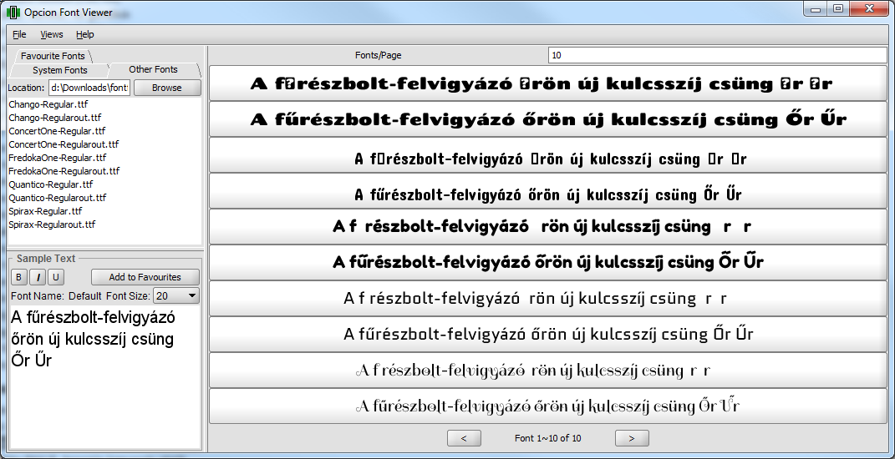

Lot of languages that use the latin script use various accents. In Hungarian the acute accent is prevalent, it exists on multiple characters: á, é, í, ó, ö, ő, ú, ü and ű, and their uppercase variants. Most of these are also present in other languages therefore font support for them is good. However two of these glyphs are almost exclusive to Hungarian: the glyphs ő and ű. Because of their international rarity they are not present in huge array of fonts, making their use in a Hugarian context hard.
Fortunately most fonts do support the é glyph. From this glyph it's usually simple to extract the acute accent. Then we only need to duplicate it to make it a double acute accent, and then add it to the o annd u glyphs. The application below uses FontForge to automate these tasks, and generate a font with which you can write out árvíztűrő tükörfúrógép.

The application is open source and can be downloaded from GitHub. To use it locally you either need fontforge installed, or docker running.
The application does not store the uploaded fonts, it deletes them from the server after conversion. Please note that although this app is free to use, in order to use it on your font you have to make sure to check with the font's licennce conditions whether it allows changes. Most open source fonts using the Open Font Licence are okay, but proprietary fonts downloaded from a font catalog - even if they are free - might disallow you to do that. To be sure you should contact the licence holder and ask them for permission, and potentially also ask for them to include the missing glyphs the next time.
For any bugs or other enquiries please use the GitHub issue tracker